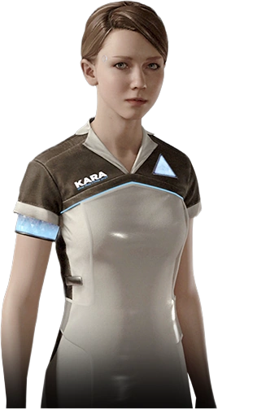

AX400 - Кара
AX400 — універсальна модель для сімейного використання від CyberLife, створена для створення комфортного та безпечного середовища для вашої сім'ї.
Основні характеристики:
- Розширені функції догляду за дітьми з адаптивним навчанням
- Вдосконалена система ведення домашнього господарства з AI-оптимізацією
- Освітні можливості з персоналізованим підходом
- Адаптивна поведінка з емоційним інтелектом
- Система безпеки та моніторингу
Функціональні можливості:
- Догляд за дітьми різного віку з індивідуальним підходом
- Проведення освітніх занять з інтерактивними матеріалами
- Приготування їжі з дієтичними рекомендаціями
- Прибирання та організація простору з оптимізацією
- Медичний моніторинг з базою знань про здоров'я
- Розвиваючі ігри з адаптивним рівнем складності
- Планування розкладу з урахуванням біоритмів
- Екологічний моніторинг приміщення
Технічні характеристики:
- Процесор: CyberLife CPU A2 200
- Оперативна пам'ять: 64 ГБ LPDDR5
- Внутрішня пам'ять: 32 ТБ NVMe SSD
- Акумулятор: 24 години автономної роботи
- Вага: 40 кг
- Ріст: 165 см